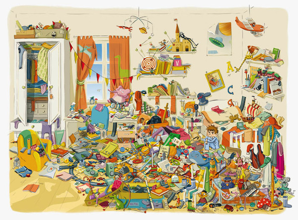
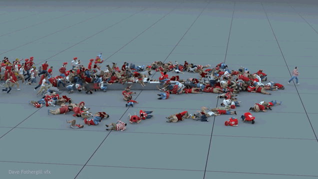
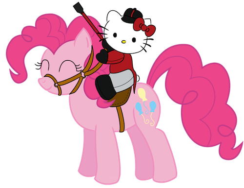

Work in a team without tripping over each other with Drupal.
Fabien Clément - @GozOo
Developper @CommerceGuys
Drupal Context
Why Drupal makes team work hard.
How Drupal is built
- Content
- Entities
- Translations
- Taxonomies
- Menus
- Configuration
- Entities and fields definitions
- Variables
- Modules display (Views, Panels, Display Suite etc)
- Registry
- ...
- Initial content
- Some translations
- Some menus items
- Initial configuration
- Some entities and fields definition
- Some modules display
- ...
How we use Drupal
Why it's hard to work with a team with Drupal.
Install modules
Add entries in system table. Execute installation stuffs (tables creations, edit existing tables or add contents if hooks from others modules are used, like create fields, entities).
Create entities (+ bundles, fields)
Add entries in existing tables and create new one.
Create / edit content
Add entries in existing tables.
Edit variables
Add serialized entries in existing table.
Create / edit displays (like Views, Panels)
Add entries in existing table.
Conflicts examples
Configuration conflict
- Julien create new A bundle with fields. + Yohan create new B bundle with fields.
- Julien and Yohan has to get A and B bundles.
- Yohan edit some of this fields from A bundle.
- Julien has to get updated fields by Yohan.
You don't have
Data conflict
- Some contents are needed to build site / work with existing website.
- Developers make some content / configuration changes, but changed are also made on existing website.
- No content changes has to be losed on each environment.
- Every configuration can be automatically overriden. All configuration made "on click" has to be considered as volatile.
Merge solutions
- No database side solution is possible considering Drupal structure.
- Every changes has to be made in files. Consider, you want to update a website without having access to UI.
- Consider every configurations you made with UI are lost.
Available tools
How tools and methods can help us.
Git (or versionning system)
What it does :
- Versionning code will prevent you to lose modifications.
- Easy to know what changes was made by team.
- Easy to know what changes was made in files by automatic tasks like features.
Git (or versionning system)
What you should use :
- Use one branch by feature.
- Use `rebase` and `pull --rebase` instead of just merge to keep logs readable between branchs.
- Prefer little commits with one fix or feature instead of one commit with lots of them : easier to read and fix conflicts.
Drush
Command line tool for drupal.
- Launch commands given by modules (migration, features revert, database update etc).
- Build commands with your own tasks in Drupal context.
- Don't use custom scripts, create your own commands instead.
Drush make
Drush extension (includes with drush).
Define list of modules or library and for each :
- Which version
- Patchs to apply
- Git or wget available
Profile
Make stuff at project building like :
- Enable modules
- Create content
Features
Feature module.
- Put some configurations built with UI in files :
- fields
- variables
- menus
- taxonomies
- views
- panels
- ...
- and revert them to database.
Implements hook_update_N()
Hook function from Drupal API.
Make stuff during development project like :
- Enable modules
- Edit configurations not availables in features
Migrate module
Define content to import at project beginning (menu, node, taxonomy, user...).
Management tools and methods
Ticketing / Kanban
- Use backlogs and assignments
- Methods like Kanban (To do | Doing | Done)
- Every changes has to be in tickets
- Log everything !
Talks & meetings
- Talk with team every days
- Difficults, success, talk !
- Coffee time, talk !
Beertalk !
Management tools examples
- Redmine (ticketing, management, kanban etc)
- Jira (ticketing, management, kanban etc)
- Scrum do (agile / kanban)
- Taiga (agile / kanban)
- Many others, list is to long.
Additionnal tips
Tags convention
Define tags convention with your team to know which task has to be done if you don't want to launch feature revert, database update etc each time you pull code.
Examples :
[fr] feature_module : Add user_fieldname. => [fr] = needs feature revert.
[add] metatags module. => [add] = new module added in .make.
[uninstall] metatags module. => [uninstall] = uninstall module.
[updb] Some stuff made on update. => [updb] = Update database.
Keep environments up to date
Do not maintain manually dev, staging etc environments.
Keep them automatically up to date with solutions like 
- Code updated thanks to git.
- Each environment is separated with his own database.
- Sync code / files / database between environments.
- Use makefile to rebuild drupal code each time you push code.
- Allow you to make stuff each time you push code like features revert, database updates, translations etc.
THE END
Get this online on http://gozoo.github.io/work-in-a-team-with-drupal